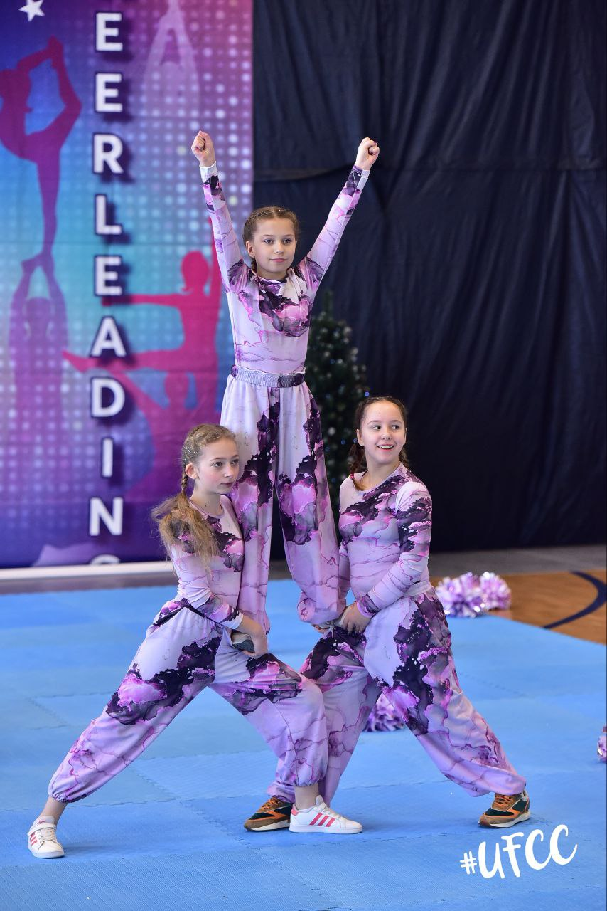
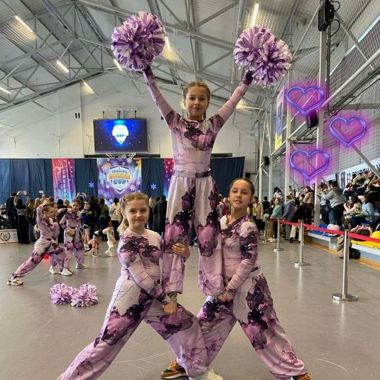

Cheerleading is an activity in which the participants (called cheerleaders) cheer for their team as a form of encouragement. It can range from chanting slogans to intense physical activity. It can be performed to motivate sports teams, to entertain the audience, or for competition. Cheerleading routines typically range anywhere from one to three minutes, and contain components of tumbling, dance, jumps, cheers, and stunting. Cheerleading originated in the United States, where it has become a tradition. It is less prevalent in the rest of the world, except via its association with American sports or organized cheerleading contests.
Read in WekepediaThe most famous Cheerleading girl
